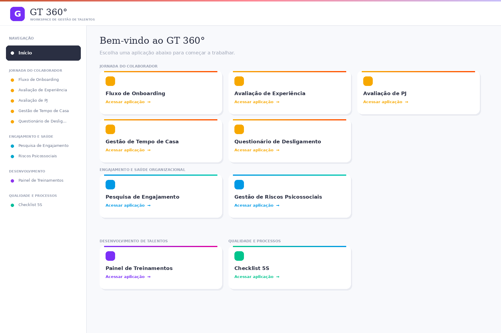
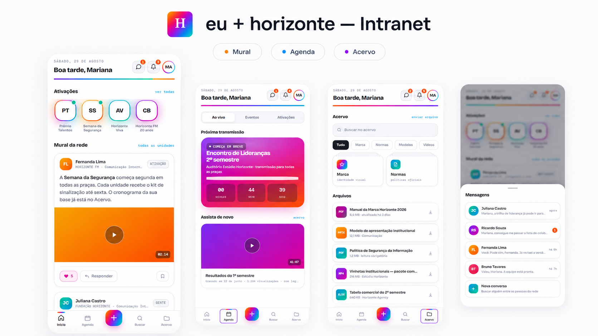

01 · PROJETO FLAGSHIP
GT360º
Workspace de Gestão de Talentos com nove aplicações voltadas à jornada do colaborador, engajamento, riscos psicossociais, desenvolvimento e qualidade.

Transformo necessidades em experiências aplicáveis. Uma atuação que conecta Gestão de Pessoas, projetos, processos, dados e produtos digitais.
Uma trajetória construída na conexão entre Gestão de Pessoas, projetos, processos, dados e tecnologia.
Profissional com mais de quatro anos de experiência em Recursos Humanos, com atuação crescente em Gestão de Projetos, Dados e soluções digitais.
Transformo necessidades organizacionais em fluxos estruturados, indicadores e soluções aplicáveis ao negócio, atuando com escopo, requisitos funcionais, priorização, stakeholders e melhoria contínua.
Projetos que conectam necessidades reais, experiência do usuário, organização de processos e aplicação de tecnologia em Gestão de Pessoas.
Workspace de Gestão de Talentos com nove aplicações voltadas à jornada do colaborador, engajamento, riscos psicossociais, desenvolvimento e qualidade.

Intranet orientada à comunicação interna, à experiência do colaborador e ao acesso simples a informações relevantes.

Uma visão integrada para compreender o problema, organizar a execução e acompanhar o valor gerado.
Diagnóstico, escopo, requisitos, priorização, indicadores e melhoria contínua.
Pesquisas, dashboards e leitura de dados para apoiar decisões em Gestão de Pessoas.
Onboarding, desenvolvimento, comunicação interna e jornada do colaborador.
Product Thinking, Scrum, Kanban, gestão visual e evolução orientada a valor.
Da base operacional à condução de projetos, processos, dados e soluções digitais em Recursos Humanos.
Projetos e soluções digitais de RH, identificação de necessidades, definição de escopo, priorização de entregas, stakeholders e indicadores. Atuação também em T&D, comunicação interna, pesquisas organizacionais, desenvolvimento de lideranças, DEI e iniciativas ESG.
Atuação generalista em onboarding, PDI e PDL, indicadores, dashboards, processos e sistemas de RH, Departamento Pessoal, benefícios, recrutamento por competências e pesquisas organizacionais.
Atuação integrada em RH e rotinas administrativas, com recrutamento, admissão, férias, benefícios, ponto, treinamentos, indicadores, comunicação interna, SESMT, folha e contratos.
Apoio aos processos de Recursos Humanos e Departamento Pessoal, incluindo admissão, organização documental, onboarding, integração, endomarketing e interface com SESMT.
Experiência operacional em ambiente industrial, com atuação em processos produtivos, organização, qualidade e colaboração entre áreas.
Base em Gestão de Pessoas, Psicologia, tecnologia e Gestão de Projetos para ampliar a leitura sobre pessoas, negócio e execução.
USP/ESALQ
Faculdade Santa Teresa
Faculdade Martha Falcão
Instituto Federal do Amazonas
Formação complementar em comportamento, dados, tecnologia, projetos, compliance e Gestão de Pessoas.
Freedom Start
DIO
Qulture Rocks
FGV & UniGlobo
Sólides
Descomplica
UniGlobo & Sólides
INOVAR RH & Sólides
DD&L Advogados Associados
Conexões e oportunidades em Recursos Humanos, Gestão de Projetos, Processos, Dados, Produto e Agilidade.